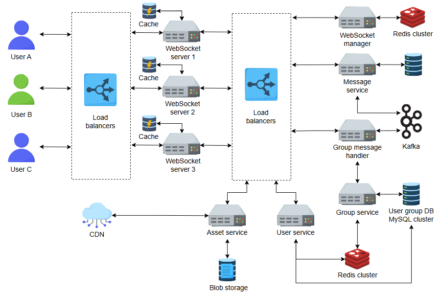

Chat Application : WhatsApp
Functional Requirements
- 1:1 chat
- Group chat
- Media/file sharing (images, video, docs)
- Read receipts & delivery status
- Presence (last seen, online/offline)
Non-Functional Requirements
- Low latency (less than 100ms for text messages)
- High availability (global users, 24/7 uptime)
- Scalability (2B+ users, 100B+ messages/day)
- Durability (messages must not be lost)
- Security (E2E encryption, TLS, secure storage)
Estimation
As of early 2025, WhatsApp reportedly handles 100 billion messages per day.This figure includes text messages, media, and voice/video calls.
Storage Estimation:
- 100 billion messages are shared through WhatsApp per day and each message takes 100 bytes on average
- 100 billion/day∗100 Bytes = 10 TB/day
- For 30 days, the storage capacity would become the following:
- 30∗10 TB/day = 300 TB/month
Number of server assumption:
- Lets assume whatsApp handles around 10 million connections on a single server, which seems quite high for a server.
- No. of servers = Total connections per day/No. of connections per server = 2 billion/10 million = 200 servers
- So, according to the above estimates, we require 200 chat servers.
High Level Design

- Client Layer
- Mobile apps (iOS/Android) maintain persistent WebSocket connections with backend.
- Uses end-to-end encryption (Signal Protocol).
- Connection with a WebSocket server:
- Each active WhatsApp device connects to a WebSocket server using the WebSocket protocol.
- WebSocket servers maintain open connections for all active (online) users.
- Multiple servers are deployed to handle billions of users since a single server cannot handle the entire load.
- Each server is responsible for providing a port to every online user.
- A WebSocket manager oversees the mapping of servers, ports, and users.
- The mapping data is stored and managed using a cluster of the data store, with Redis being used for this purpose
.
- Message Flow (1:1 chat)
The system performs the following steps to send messages from user A to user B:
- User A sends message → WebSocket Server A.
- WebSocket Server A queries WebSocket Manager → finds User B’s connected server.
- If User B is online, the WebSocket manager provides the details of User B's WebSocket server to User A's WebSocket server.
- User A's WebSocket server sends the message to the message service, which stores it in a MySQL database for processing in first-in-first-out (FIFO) order.
- Messages are deleted from the MySQL database once delivered to the recipient.
- After identifying User B's WebSocket server, communication between User A and User B begins directly via their respective WebSocket servers.
- If User B is offline, messages are stored in the MySQL database.
- When User B comes online, messages are delivered via push notification or deleted permanently after 30 days.
- Both users communicate with the WebSocket manager to locate each other’s servers.
- Frequent conversations lead to caching optimizations by each WebSocket server, minimizing calls to the WebSocket manager.
- Each WebSocket server caches recent conversation details, including user-to-server mappings.
- If users are connected to the same server, calls to the WebSocket manager are avoided.
- Send or receive media files:
- Media files are compressed and encrypted on the device side.
- The compressed and encrypted file is sent to the asset service, which stores it on blob storage and assigns an ID to the file.
- The asset service maintains a hash for each file to avoid duplication. If a file already exists in the blob storage, the same ID is reused instead of uploading the file again.
- The asset service sends the media file ID to the receiver via the message service.
- The receiver uses the ID to download the media file from the blob storage.
- Content is loaded onto a CDN if the asset service receives a high number of requests for specific content.
- Support for group messages:
-
User A Sends a Message to the WebSocket Server:
- User A is connected to a WebSocket server, which maintains an active connection for the user.
- When User A sends a message intended for Group/A, the WebSocket server forwards it to the message service.
- The message service handles the initial processing and routing of the message.
-
Message Service Sends the Message to Kafka:
- The message service packages the message with metadata such as group ID (Group/A), sender ID, and timestamp.
- The service publishes the message to Kafka for further processing.
-
Kafka's Responsibility (Message Broker):
-
Topic Management: Kafka treats each group (e.g., Group/A) as a "topic." Topics are logical channels for organizing messages, where producers (senders) write messages and consumers (receivers) read them.
-
Message Storage: Kafka temporarily stores the message in a partitioned log associated with the Group/A topic, ensuring durability even during failures or delays.
-
Scalability: Kafka partitions topics for parallel processing, enabling the handling of millions of messages efficiently.
-
Producer and Consumer Decoupling: Kafka decouples senders (producers) and receivers (consumers), simplifying the architecture and allowing dynamic scaling of recipients.
-
Consumer Coordination: Kafka ensures that all intended recipients receive messages in the correct order, coordinating delivery between producers and consumers.
-
Group Service Retrieves Group Metadata:
- The group service maintains metadata for groups, including:
- User IDs in the group.
- Group ID and status (active/inactive).
- Group attributes like the group icon and number of members.
- Metadata is stored in a MySQL database cluster with:
- Secondary Replicas: Geographically distributed replicas ensure high availability and reduce latency for read operations.
- Redis Cache: Frequently accessed group data is cached to improve response times and reduce database load.
-
Group Message Handler Fetches Group Data:
- The group message handler communicates with the group service to retrieve Group/A user data and statuses (online/offline).
- It retrieves the message for Group/A from Kafka and processes it.
-
Message Delivery to Group Members:
- The group message handler acts as the consumer for Kafka messages.
- For each user in Group/A:
- If the user is online, the handler forwards the message to the WebSocket server they are connected to for real-time delivery.
- If the user is offline, the message may be stored temporarily or forwarded to a push notification system.
- Additional Services - think on it
- Presence Service → Tracks last seen & online status (stored in Redis).
- Delivery Receipts Service → Updates ticks (✓ sent, ✓✓ delivered, ✓✓ blue read).
- Monitoring + Logging → Elastic + Grafana + Prometheus.
Non-functional Requirements
-
Minimizing Latency
- Geographically distributed cache management systems and servers
- CDNs (Content Delivery Networks)
-
Consistency
- Provide unique IDs to messages using Sequencer or other mechanisms
- Use FIFO messaging queue with strict ordering
-
Availability
- Provide multiple WebSocket servers and managers to establish connections between users
- Replication of messages and data associated with users and groups on different servers
- Follow disaster recovery protocols
-
Security
- Via end-to-end encryption
-
Scalability
- Performance tuning of servers
- Horizontal scalability of services
Followup Questions and Answers
1. Why do we need a WebSocket Manager when WebSocket servers can talk to each other?
- Trap: Interviewer checks if you understand scaling and mapping of billions of connections.
- Answer: Without a centralized manager, servers don’t know which user is connected to which server.
A WebSocket Manager (with Redis/Consistent Hashing) efficiently maintains user-to-server mapping, enabling quick message routing.
Direct server-to-server queries would add latency and complexity at scale.
2. How do you ensure message ordering across servers?
- Trap: Interviewer wants to see if you rely only on Kafka or think about sequencing.
- Answer: Use a sequencer (centralized or distributed with logical clocks) to assign increasing message IDs.
Kafka preserves ordering within a partition, so partition messages by (chatId or groupId).
This ensures strict FIFO order for each conversation or group.
3. What happens if the WebSocket Manager itself fails?
- Trap: Checks if you thought about single point of failure.
- Answer: WebSocket Manager must be replicated with leader-election (e.g., Raft/ZooKeeper/Etcd).
Clients cache recent mappings, so even if the manager is temporarily unavailable, servers can still route messages until recovery.
4. How do you scale group chats with millions of users (like WhatsApp Broadcast)?
- Trap: They want to test group fan-out design.
- Answer: Don’t push to every user directly from one server. Instead:
- Use Kafka (or Pulsar) for fan-out via partitions.
- Each user’s WebSocket server consumes messages relevant to its connected users.
- For very large groups, use sharding + multicast trees to reduce fan-out cost.
5. Why store messages in MySQL and not just Kafka?
- Trap: Checks if you confuse persistence with pub-sub.
- Answer: Kafka is a log, not a long-term store.
MySQL (or Cassandra) provides durable, queryable history for compliance, replay, and recovery.
Kafka retains only for short TTL, while MySQL ensures permanent storage (e.g., 30 days or more).
6. How do you deliver messages to offline users?
- Trap: Interviewer checks push notification handling.
- Answer: Store undelivered messages in durable DB (MySQL/Cassandra).
When the user reconnects, fetch from DB and deliver.
If still offline, trigger push notification via APNS/FCM.
Expire after policy (30 days).
7. How do you achieve low latency across continents?
- Trap: Latency ≠ just WebSocket optimization.
- Answer: Deploy geo-distributed WebSocket servers.
Use GeoDNS / Anycast for nearest-region routing.
Redis clusters and Kafka clusters replicated across regions (with conflict resolution) ensure messages stay close to users.
8. How do you ensure exactly-once delivery?
- Trap: Messaging systems usually give at-least-once or at-most-once.
- Answer: Use idempotent message IDs + deduplication at receiver side.
Store delivery receipts. If a duplicate arrives, ignore based on messageId.
This simulates exactly-once semantics on top of at-least-once infra.
9. Why use Redis for caching user-server mappings?
- Trap: Checks if you know alternatives.
- Answer: Redis provides in-memory, distributed, and fast lookups (sub-ms).
Alternatives like Consistent Hashing or gossip protocols exist, but Redis supports TTLs, pub-sub, and replication, making it ideal.
10. How do you handle media messages differently from text?
- Trap: They check if you know bandwidth/storage issues.
- Answer: Media files are uploaded to Blob storage/CDN.
Only references (fileId, hash) are shared via WebSocket/DB.
This avoids duplicating heavy payloads in message queues or DB.
11. How do you prevent one slow consumer in a group from delaying others?
- Trap: Classic backpressure problem.
- Answer: Use Kafka consumer groups per user.
Each user’s queue is independent.
Slow consumer does not affect others because partition offset is tracked separately.
12. How do you ensure security (end-to-end encryption) with this architecture?
- Trap: Tests if you confuse encryption in transit with E2E.
- Answer: Messages are encrypted on sender’s device using recipient’s public key (Signal Protocol).
WebSocket servers, Kafka, MySQL only see ciphertext.
Only recipient’s device can decrypt, ensuring E2E security.